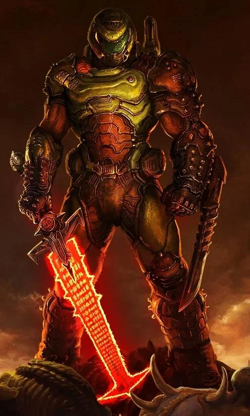

Perante todo o mal conjurado do inferno... Toda a perversidade produzida pela humanidade... Nós enviaremos a eles... apenas você. Matar e dilacerar, até o fim.
- Matar demônios com armas de fogo
- Perfeito em uso de armas nucleares
- Colecionar armas
- Rasgar demônios com as mãos nuas e com armas brancas
- Cuidar de coelhos
Site do Doom Slayer